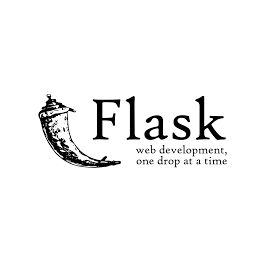
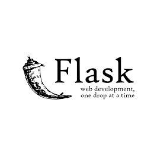
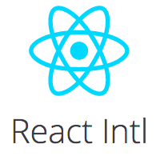
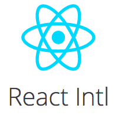
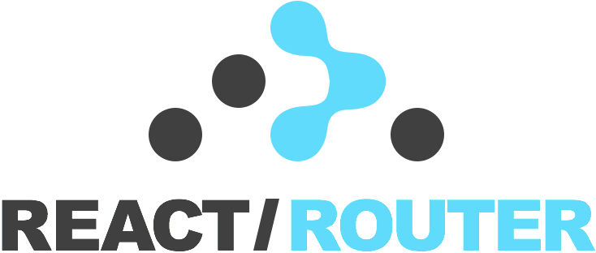
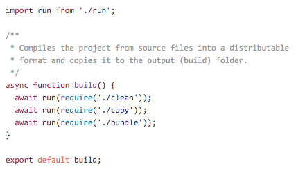
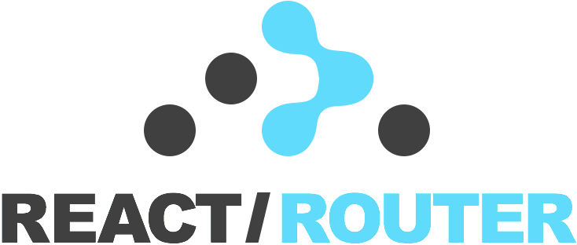
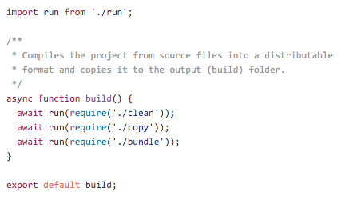

React 사용사례
FBDG 2015
Created by Ironhee
Ediket
구현로직
Frontend > Backend
개발 사이클
단기 > 장기
스타트업
잦은 기획의 변경
개발팀
3명
기존 개발스택
 


좀... 불편합니다
Backbone + Marionette
View 복잡함 (DOM 직접 제어)
-> 가독성 낮음
-> 재사용성이 떨어짐
-> 협업이 어려움
그 밖의 여러가지...
Require.js
AMD 전용 코드
dependencies Hell
복잡함
Flask + Jinja2 + Babel
(server-side template)
백엔드 개발자가 프론트 코드를 작성 or 프론트 개발자가 백엔드 코드를 작성
Context Switching Cost
프론트와 백엔드의 역할 분리 X
Flask
(Server-Side Routing)
팀의 핵심역량 = 프론트엔드 개발
-> Client-Side Routing (SPA) 필요
Grunt
사실 단점이라 할만한 단점은 없는 것 같다.
요즘게 너무 좋아서 안쓰는 케이스.
현재 개발 스택
 

 



자세한 내용은 시연에서...
후기
프론트엔드,
로맨틱,
성공적